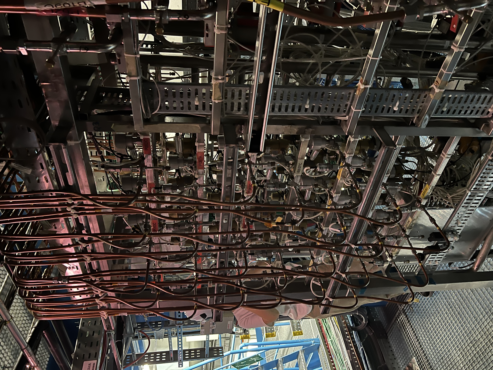

RESEARCH
From detector to discovery
Our work spans physics analysis, machine-learning algorithms, and computing infrastructure — every layer in service of one goal: finding new physics in LHC data.
01
 The
ATLAS detector · CERN
The
ATLAS detector · CERN
Beyond-Standard-Model searches
The
ATLAS detector · CERN
Exploring new physics through innovative searches for rare and challenging collider signatures.
Developing fast machine-learning models and AI triggers for real-time decisions.
SELECTED RESULTS
Level-0 MDT trigger FPGA
algorithms for the HL-LHC (2018–2023)
Event Filter tracking (2023–)
b-jet trigger Run 4 R&D (2025–)
03
ML-based Reconstruction

ATLAS inner detector services · CERNUsing AI to reconstruct complex collision events with greater speed and precision.
Building general-purpose models to understand and analyze diverse scientific data.
Providing scalable, efficient ML inference infrastructure for the scientific community.
Want to work on one of these?
Join the lab